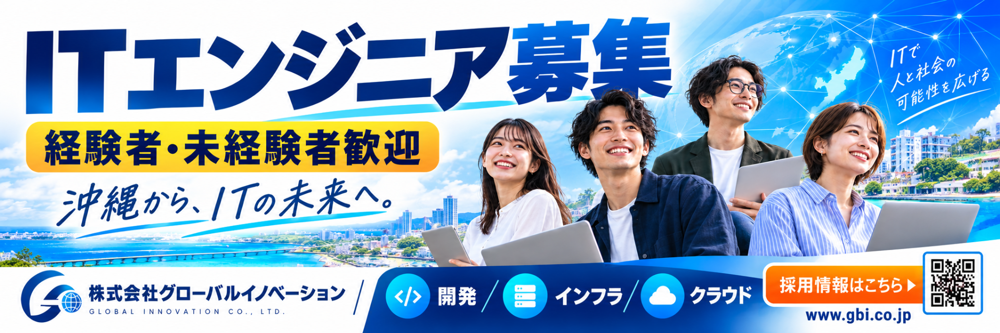

開発
システムやWebサービスをつくり、使う人の課題を解決する仕事。プログラミングや設計に興味がある方へ。
DEVELOPMENT
株式会社グローバルイノベーションは、開発・インフラ・クラウドなどのIT領域を通じて、企業や社会を支えています。経験を活かしたい方も、これからITエンジニアを目指す方も。あなたらしいキャリアの可能性を、沖縄から広げていきましょう。
興味や経験に合わせて、ITのさまざまな仕事に挑戦。
システムやWebサービスをつくり、使う人の課題を解決する仕事。プログラミングや設計に興味がある方へ。
DEVELOPMENTサーバーやネットワークなど、ITサービスを支える基盤を守り、安定した稼働を支援する仕事。
INFRASTRUCTUREクラウド環境の構築・運用を通じて、柔軟で信頼性の高いIT環境を支える仕事。
CLOUD詳細な選考手順は、募集職種ごとの案内をご確認ください。
募集職種や応募条件をチェック。
応募フォームから必要事項を送信してください。
経験や希望するキャリアをお聞かせください。
選考結果や今後の流れをご案内します。
バナーでは経験者・未経験者ともに歓迎と案内しています。職種ごとの応募条件や必要なスキルは、最新の採用情報をご確認ください。
本ページでは、開発・インフラ・クラウドの3領域を紹介しています。現在募集中の職種は公式の採用情報でご確認ください。
正確な条件は募集時期や職種によって異なる場合があります。公式サイトの採用情報、または採用窓口へお問い合わせください。
新しいキャリアへの一歩を、ここから。応募フォームからエントリーして、次のキャリアへの一歩を踏み出しましょう。